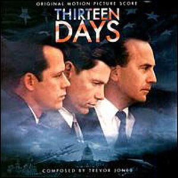

|
Home Inaction Hero The Wicked Witch Project Joe's Book Movie Reviews About Cinemaslave Contact Comment to Joe
Buy the book Thirteen Days: A Memoir of the Cuban Missile Crisis by Robert Kennedy
|
 Thirteen Days
STARRING: Kevin Costner, Bruce Greenwood, Steven Culp, Dylan Baker, Henry Strozier, Frank Wood, Len Cariou, Janet Coleman DIRECTOR: Roger Donaldson WRITERS: Ernest R. May and Philip D. Zelikow RATED: PG-13 RELEASED: 2000 So what is it about John F. Kennedy that keeps inspiring these epic films anyway? Amazingly, almost 40 years after the untimely assassination of Marilyn Monroe's favorite boy-toy, people still can't get enough of America's youngest president and his story. In his death, Kennedy has become something of a symbol for the country's spirit of freedom and indomination, and his deeds, like the man himself, have long since become the stuff of legend. Sure, that probably says as much about America's dire lack of contemporary heroes as it does the continuing intrigue of the Kennedy mythology. But no man is perfect, and Roger Donaldson's Thirteen Days paints Kennedy less as an archetypal, romanticized American patriot than a frustrated, worried man struggling with the biggest problem of his (or indeed, of any man's) career: the Cuban Missile Crisis. Donaldson and actor Kevin Costner are no strangers to political thrillers; the pair worked together on 1987's No Way Out, one of my favorite suspense movies of the '80s, worthy of comparison to Hitchcock's better pictures. And Costner, of course, has already parlayed his hard-on for Kennedy conspiracy theories into a starring role in Oliver Stone's controversial (albeit fascinating) JFK. So it's probably no surprise that both actor and director approach their respective jobs with an abundance of passion that colors every frame of the film. And yet the great strength of Thirteen Days is the way in which the supremely intelligent screenplay keeps the action focused squarely on the human drama of the story, rather than the ghastly events unfolding around the world. It's a technique that lends an intimate--indeed, even claustrophobic at times--feel to the proceedings. THE STORY: Kenny O'Donnell (Costner) is a top political advisor to President Kennedy (Bruce Greenwood). Although kept busy with his job, O'Donnell is a devoted family man with nothing more worrisome in his idyllic life than his son's less-than-glowing report card. Things soon change, however, when satellite photographs reveal large stockpiles of Soviet nuclear missiles in Cuba. When Kennedy's demands for the immediate dismantling of the weapons fall on unresponsive Russian ears, Kennedy imposes a trade blockade around the island, an act which brings the world to the brink of nuclear war. The performances here are consistently strong, though the film unfortunately proves, as did Robin Hood: Prince of Thieves, that Kevin Costner can't do a convincing accent to save his life. Still, what he lacks in vocal diction, Costner more than makes up for in sheer screen presence. He's both friend and spiritual brother to John Kennedy and his little brother Bobby (a show-stealing performance by Steven Culp that has to be seen to be believed), and provides the strength and wisdom for which the situation calls. Kenny, unlike most of the other characters in the story, recognizes the need to contain the situation as much as possible--witness, for example, his request for American pilots not to report any enemy attacks to their supervisors. Kenny wisely recognizes that such reports would force Kennedy to respond in kind with violence. "Sparrows," explains O'Donnell. "That's all that hit your plane. Sparrows, not bullets." The Cuban Missile Crisis was the most dangerous chess game the United States has ever played, and Thirteen Days depicts every move with the respect and weight it deserves, often with haunting results. It's a chilling indication of human nature, for instance, that while Kennedy celebrates the continuing peace between the two nations at the conclusion of the film, many of his advisors are already planning how to best use their new political clout to further their careers, rather than celebrating the avoidance of global annihilation. Thirteen Days is a skillful piece of filmmaking that reveals Donaldson's desire to educate his audience as well as entertain. The movie introduces each new character with a subtitle explaining his or her function in the proceedings, thereby ensuring that viewers born long after the events depicted here will still be able to follow the story with ease. Historical weight is given to the proceedings via black and white insert shots. And, as previously stated, power is granted to the story's performances by revealing our protagonists not as ultra-calm superheroes but as men engulfed in worry and self-doubt. It's an uncommonly human approach to a political thriller, and I applaud it.
RATING: *** 1/2 (out of a possible ****)
|